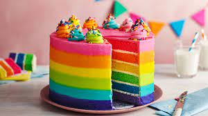

CV
My Curriculum Vitae (CV) is a comprehensive document detailing my educational background, work history, skills, and accomplishments. It highlights my academic achievements, work experience, certifications, and personal interests, providing a comprehensive snapshot of my professional journey.
View CV PDFEthical Hacking Pen Test

The Ethical Hacking Pen Test project involved conducting simulated security assessments on a network infrastructure. Through meticulous testing and analysis, I identified vulnerabilities, assessed potential risks, and delivered a detailed report with recommended mitigation strategies to strengthen the system's security posture. This project encompassed extensive research, hands-on testing, and collaboration with cybersecurity experts to ensure a comprehensive evaluation of potential threats.
View Ethical PDFFinal Year Project: Improving Access to Resource Utilisation Education

My Final Year Project was a significant endeavor focused on designing an innovative educational platform to promote resource utilization awareness. By creating engaging content, interactive modules, and inclusive design principles, I aimed to provide accessible education on sustainability to a diverse audience. The project involved in-depth research, user-centered design, content creation, and collaboration with educators and accessibility experts. Through this project, I sought to contribute to a more informed and conscious approach to resource management.
View FYP PDFUsability Test Report for Booking.com

The Usability Test Report project was an extensive evaluation of the user experience on the Booking.com website. Through a comprehensive approach involving user testing, heuristic analysis, and expert reviews, I assessed the platform's usability, identified pain points, and provided detailed recommendations for enhancing the overall user interface, navigation, and satisfaction. This project required conducting user interviews, gathering quantitative and qualitative data, and synthesizing findings to present actionable insights that could contribute to improving the user experience for a global audience.
View Usability PDF